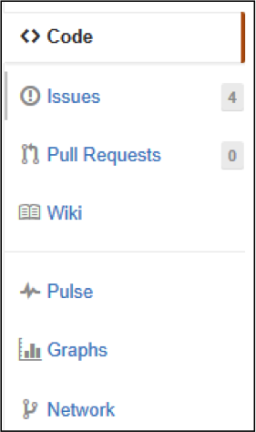
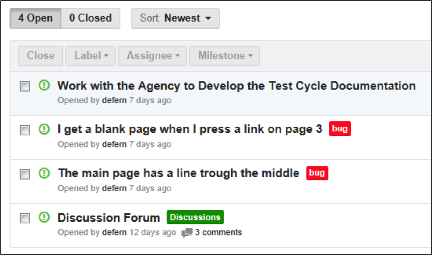
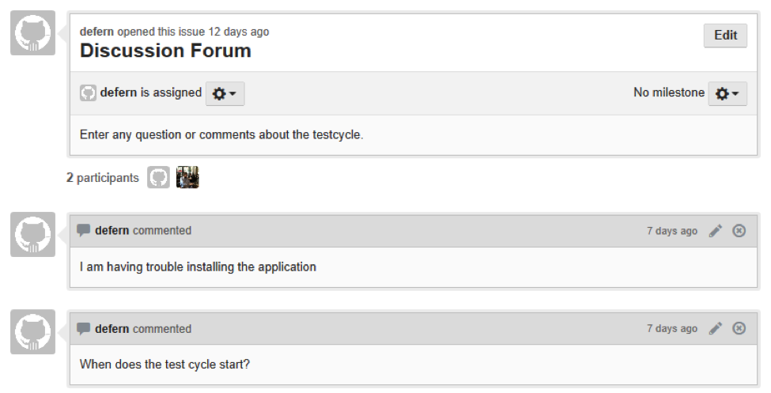
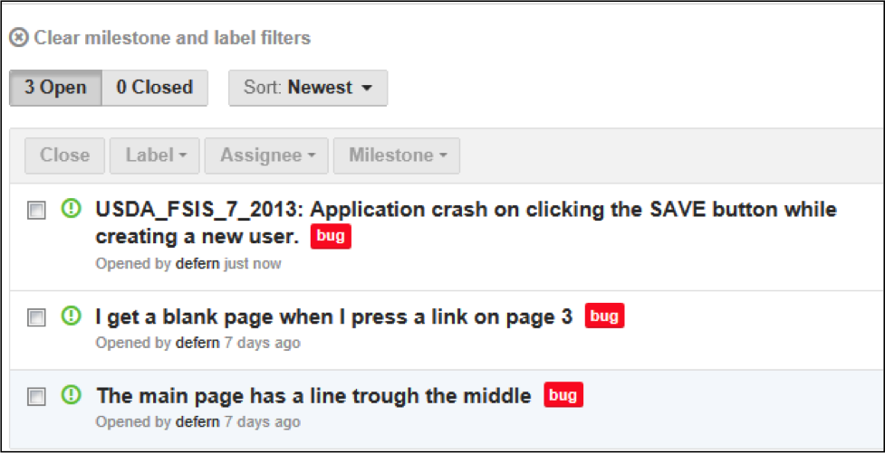
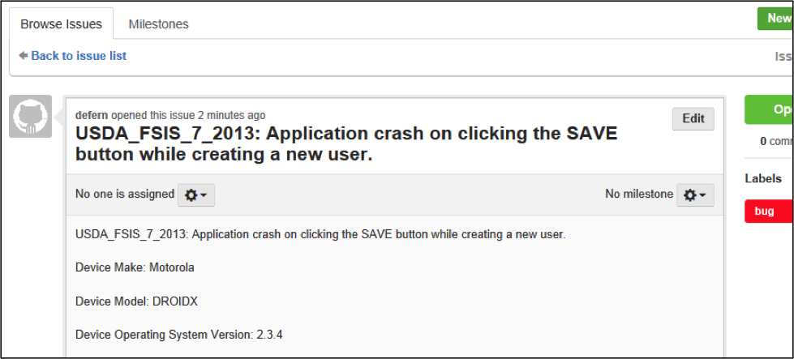
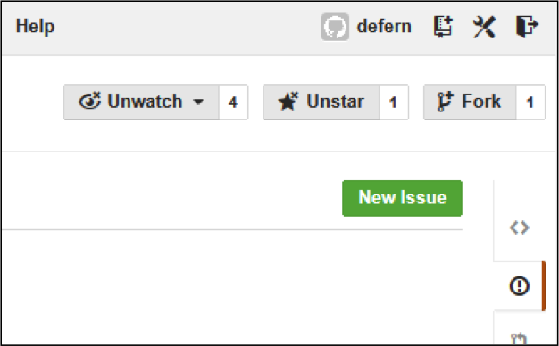
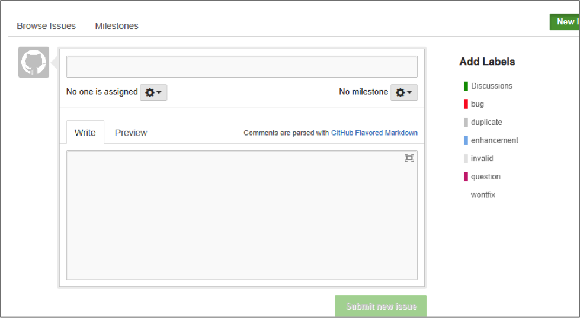
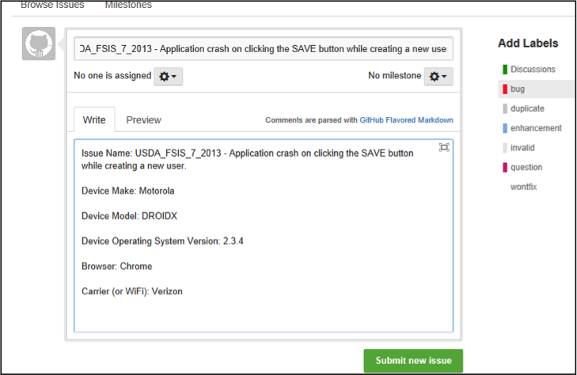

Thank you for agreeing to help us test out the use of GitHub for the Crowdsource test cycles. We will only be using the first test cycles for discussions and issue tracking. If you have any questions about GitHub that are not addressed here, please direct them to the Crowdsource test cycle leader.
If you already have a GitHub username and password, you can jump right into the next section Using GitHub.
If you have never used GitHub before, then you are in for a treat.
Go to https://github.com/GSA Click Sign up Create your account. All that you need to enter to create your account is: username, email address and password and you are set.
Go to the GitHub project provided by the test-cycle leader.
Check to be sure you are in the correct project by looking at the Agency Name and test cycle dates in the "README.MD" file right in the middle of the first page.
From the main test cycle GitHub page
Click on the "Issues" link on the right side of the page as shown below:
You should see an issue named "Discussion Forum" similar to the what is shown in the picture below:
Click on "Discussion Forum" and you should see a thread where you can see what others are saying or asking and ask any question you may have or give feedback or help to other Testers. This works like most other discussion boards.
From the main test cycle GitHub page
Click on the "Issues" link on the right side of the page as shown below:
You should see some issues similar to what is shown in the picture below:
Click on any of the issues that you would like more detail on and they will open and look similar to the picture below.
From the main test cycle GitHub page
Click on the "Issues" link on the right side of the page as shown below:
Click "New Issue" in the upper right corner that looks similar to the picture below:
A blank issue will open and look similar to the picture below.
Enter information using the information below as a model:
| Example | Direction |
|---|---|
| Issue Name: USDA_FSIS_7_2013 - Application crash on clicking the SAVE button while creating a new user. | Issue Name:Be descriptive and start with the "USDA_FSIS_7_2013 -" |
| Context Device Make: Motorola Device Model: DROIDX Device Operating System Version: 2.3.4 Browser: Chrome Carrier (or WiFi): Verizon Severity: Medium | Context Device Make: Device Model: Device Operating System Version: Browser: Carrier (or WiFi): Severity: High, Medium, or Low |
| Description Application crash on clicking the SAVE button while creating a new user, hence unable to create a new user in the application. | Description:Provide a good description of what happened. |
Steps to Reproduce
|
List the steps to reproduce the issue. |
| Expected result On clicking SAVE button, should be prompted to a success message "New User has been created successfully". | Expected resultWhat were you expecting to happen? |
| Attached: Save_Button_Issue.logSave_Button_Issue_Screen_Shot.gig | Name and attach log files and/or screen shots where possible |
Enter the information and press the information of the issue, select "Bug" from the "Add Labels" to the right and click "Submit New Issue".
The screen should look similar to the picture below:
